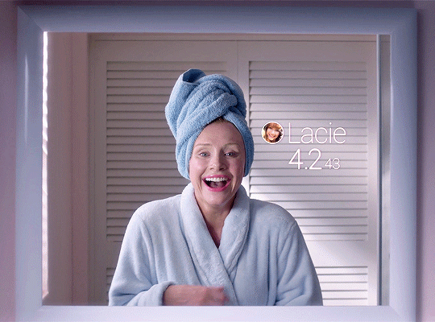
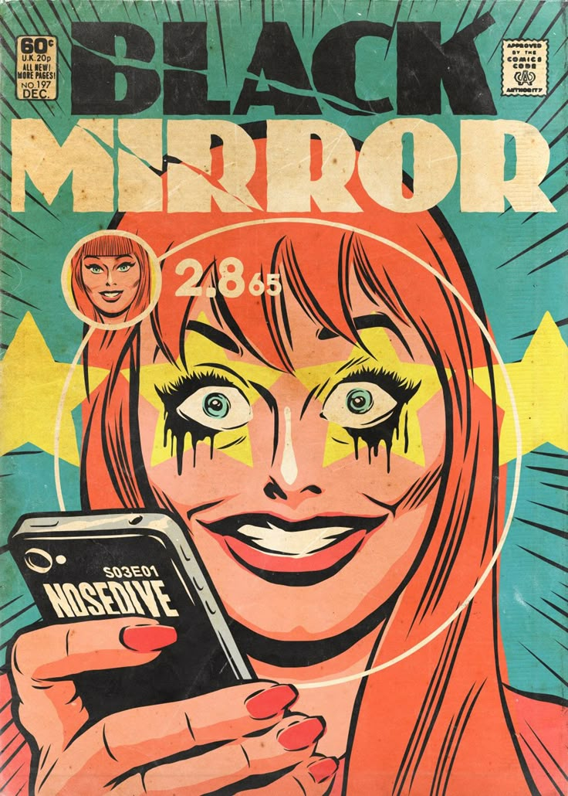
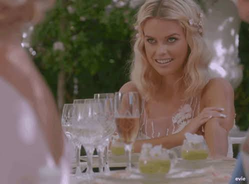
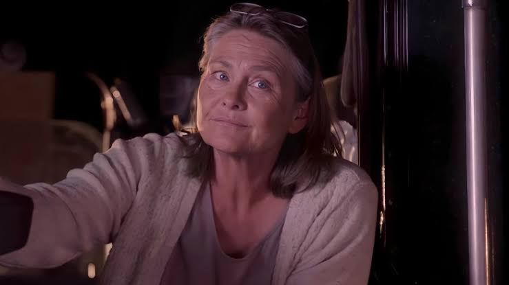
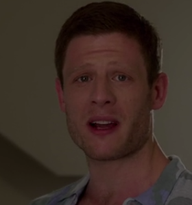

#ColoqueUmSorrisoNoRosto
As pessoas avaliam as interações sociais em uma escala de cinco estrelas, afetando o status socioeconômico.
Lacie (Bryce Dallas Howard), com 4.2 estrelas, busca 4.5 para um apartamento melhor. Ela se torna dama de honra no casamento de Naomi. Uma série de infortúnios faz sua pontuação cair, e ela é penalizada com "dano duplo".
Ela tenta chegar ao casamento, mas é desconvidada. Ao invadir a festa, ela faz um discurso agitado e é presa, tornando-se "inavaliável" e sem status social, mas encontrando uma nova liberdade na prisão.
Os temas incluem redes sociais, validação online, consumismo, pressão por conformidade, a obsessão pela imagem, a cultura de cancelamento e a estratificação social.

O episódio faz referência a "Hino Nacional" com uma atualização de status de Michael Callow.
A empresa "Reputelligent" de "Odiados pela Nação" é referenciada.
O jogo Nohzdyve em Bandersnatch é uma referência visual e temática a "Queda Livre".
Rashida Jones, co-roteirista do episódio, estrela "Pessoas Comuns" na temporada 7.
"Queda Livre é uma sátira perspicaz da obsessão por validação social e da tirania da opinião alheia, onde a vida de uma pessoa é reduzida a um número.
O episódio demonstra como a busca incessante por aprovação online pode levar à perda de autenticidade e à ansiedade, mesmo em um mundo aparentemente perfeito.
A queda de Lacie do status social, embora dolorosa, a liberta da prisão de sorrisos falsos e da necessidade de conformidade.
A história serve como um comentário sobre a "cultura do cancelamento" e a forma como as redes sociais recompensam a "opinião extrema", transformando a vida em um jogo de soma zero.
A comparação com o Sistema de Crédito Social da China destaca uma preocupação real com a vigilância e o controle governamental sobre a vida dos cidadãos, onde a tecnologia, em vez de empoderar, aprisiona.
Lacie Pound (Bryce Dallas Howard): A protagonista obcecada por sua pontuação social.

Naomi Blestow (Alice Eve): Amiga de infância de Lacie, com alta pontuação.

Susan (Cherry Jones): Uma motorista de caminhão com baixa pontuação, que oferece uma perspectiva diferente.

Ryan Pound (James Norton): Irmão de Lacie, crítico do sistema.
❝Isso são upvotes de pessoas de qualidade.
— Analista de Avaliação
Destaca a busca por validação.
❝O que é isso? Um programa de eugenia? Ninguém é tão feliz.
— Ryan
Questiona a artificialidade da sociedade.
❝Não posso ter uma 2.6 no meu casamento.
— Naomi
Ilustra a estratificação social extrema.
❝Cedo para perder de vista o que é real, o que importa.
— Lacie
Uma fala irônica de Lacie.
❝São celas de prisão com sorrisos falsos!
— Ryan
Descreve a superficialidade da comunidade.
Data de Estreia:
21 Out 2016
Duração:
1:03:23
Escritor:
Charlie Brooker (story), Michael Schur & Rashida Jones (teleplay)
Diretor:
Joe Wright